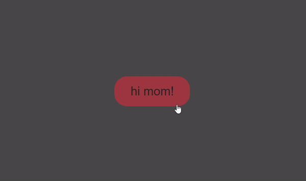

Short
css stuff
Ripple effect on button
Create an overlay that scales up with transition when btn is clicked, also overflow-hidden the parent.
Result

How to do it?
<button>hi mom!</button>
button {
position: relative;
overflow: hidden;
color: rgb(30, 29, 29);
background-color: #AD343E;
padding: 1rem 2rem;
font-size: 1.5rem;
outline: 0;
border: 0;
border-radius: 25px;
cursor: pointer;
}
span.ripple {
position: absolute;
border-radius: 50%;
transform: scale(0);
animation: ripple 600ms linear;
background-color: #4747474e;
}
@keyframes ripple {
to {
transform: scale(4);
opacity: 0;
}
}